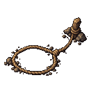
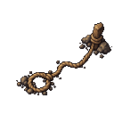
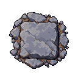
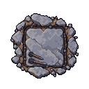
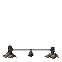
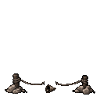
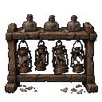
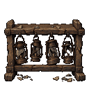

Traps and the dead-lamp store
Ready and resolved states at native128 and small display sizes. The lamp rack never emits light; its sealed flasks disappear after searching. Dart holes mount on real cave rock at knee height. Trap visibility and event rules remain unchanged.
Snare

closed
usedDart

closed
usedBell

closed
usedLamp

closed
usedActual first-person review

Handoff and mounting details · Exact built-in ImageGen prompts and sources · Dark sheet · Light sheet